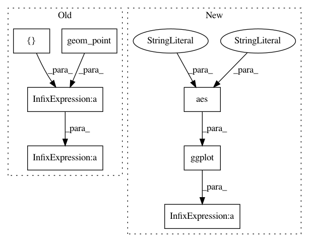

61359b01bbafa7a98ad614835159705d9003476a,plotnine/tests/test_annotation_logticks.py,,test_annotation_logticks_coord_flip,#,32
Before Change
def test_annotation_logticks_coord_flip():
p = (
ggplot(mtcars)
+ geom_point(aes("wt", "mpg"))
+ scale_x_continuous(
trans="log10", minor_breaks=8, limits=(1, 10), breaks=[1, 10]
)
+ scale_y_continuous(
trans="log10", limits=(10, 100), minor_breaks=8, breaks=[10, 100]
)
+ annotation_logticks(sides="b") // which ends up on the left
After Change
def test_annotation_logticks_coord_flip():
p = (ggplot(df, aes("x", "x"))
+ annotation_logticks(sides="b", size=.75)
+ geom_point()
+ scale_x_log10()
+ scale_y_log10()
+ coord_flip()
+ theme(
In pattern: SUPERPATTERN
Frequency: 3
Non-data size: 7
Instances
Project Name: has2k1/plotnine
Commit Name: 61359b01bbafa7a98ad614835159705d9003476a
Time: 2018-12-28
Author: has2k1@gmail.com
File Name: plotnine/tests/test_annotation_logticks.py
Class Name:
Method Name: test_annotation_logticks_coord_flip
Project Name: has2k1/plotnine
Commit Name: 61359b01bbafa7a98ad614835159705d9003476a
Time: 2018-12-28
Author: has2k1@gmail.com
File Name: plotnine/tests/test_annotation_logticks.py
Class Name:
Method Name: test_annotation_logticks
Project Name: has2k1/plotnine
Commit Name: d29a72a2f206ec79c5311e45687d1318dec809eb
Time: 2013-12-06
Author: jasc@gmx.net
File Name: ggplot/tests/test_basic.py
Class Name:
Method Name: test_facet_grid